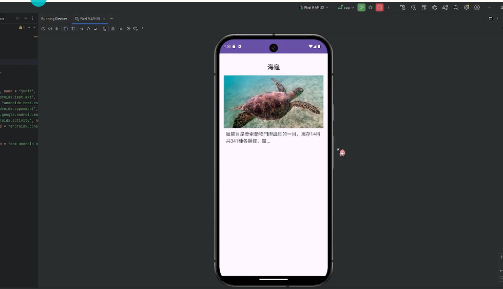
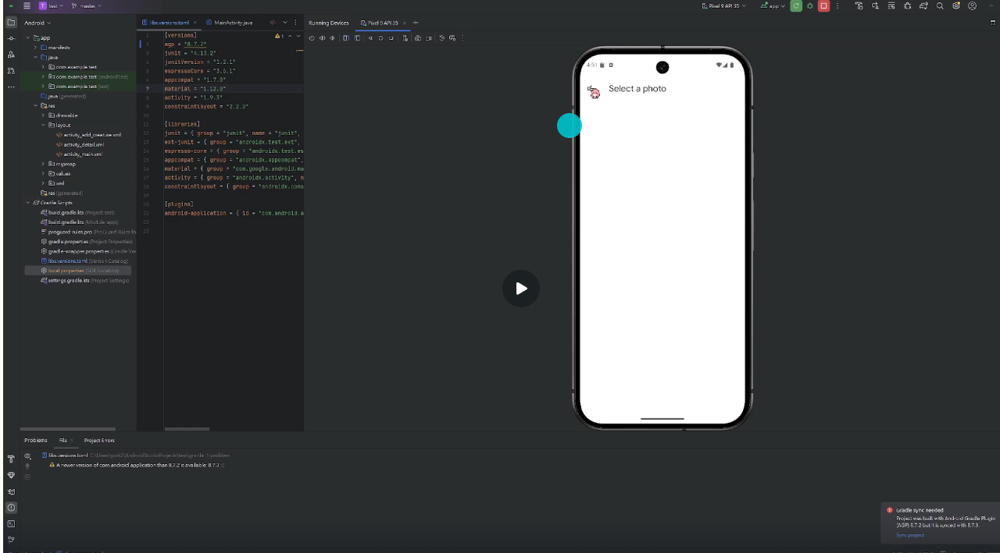
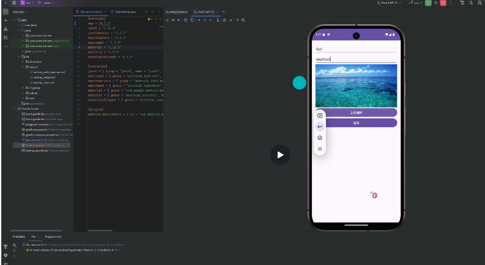

展示應用主界面
展示應用的主界面，用户可以看到已添加的海洋生物列表，以及它們的圖片和簡短描述。
照片上傳功能
展示用户可以上傳生物圖片的功能界面，通過選擇圖片並輸入名稱和描述來添加新的海洋生物。
應用登入或功能入口
展示應用的歡迎界面或主要功能入口，讓用戶輕鬆開始探索海洋生物。
海龜詳細資訊

具體展示某個海洋生物（如海龜）的詳細信息，包括圖片和完整的生物描述。
展示應用的主界面，用户可以看到已添加的海洋生物列表，以及它們的圖片和簡短描述。
展示用户可以上傳生物圖片的功能界面，通過選擇圖片並輸入名稱和描述來添加新的海洋生物。
展示應用的歡迎界面或主要功能入口，讓用戶輕鬆開始探索海洋生物。
具體展示某個海洋生物（如海龜）的詳細信息，包括圖片和完整的生物描述。